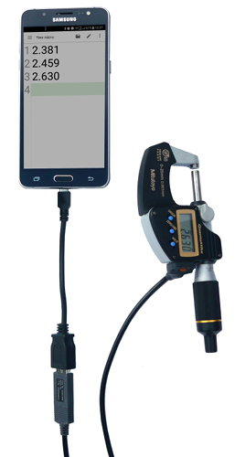
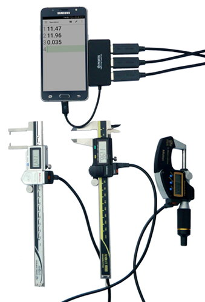
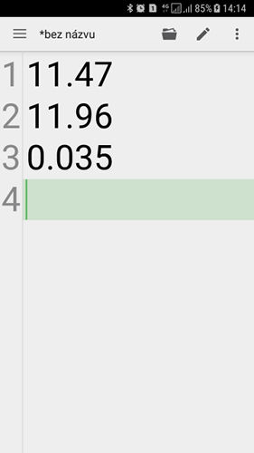

Connecting Mitutoyo small instruments with Android devices

Many of Mitutoyo small instruments are able to send results to computer or other electronic device. The ability to connect Mitutoyo small devices with Android will bring you three tremendous advantages:
- it allows you to keep track of measurement
- visual presentation on the dashboard
- transport of data to target device for final processing
Connection using USB-ITN cable
Connection using Mitutoyo USB-ITN cable (Input Tool Direct) is easiest way how to connect small tools as calipers, micrometers or dial indicators. The only think is need to connect the device is commonly used USB OTG cable. This cable serve simultaneously as converter from USB A connector to micro USB. Some types of USB OTG cables can also include charging outlet.
Appropriate Android application for visualization of data should be Quick Edit. This simple text editor allows you to set the text size, line numbering, etc.



On this picture you can see micrometer connected to Android phone. More instruments is possible to connect using cheap small USB OTG hub.
On the right example of output record from three instruments in QuickEdit editor.
The connection is very easy, cheap and effective. The set of devices which you can see on the picture can be used among other as a small data logger.
By using USB OTG cable with multiple outlets you can connect several instruments tools in the same time.
RS232 connecting using RS232/USB converter
Instruments with RS232 output it is possible connect with Android devices using the RS232/USB convertors. Choose convertor with FTDI chip (it is wide used and easy to buy). This way is possible connect for example linear height instruments (LH600) or other instruments with QM Data unit (measuring projectors) or laser scan microscopes (LSM).Appropriate Android application for visualization of data is Serial USB terminal. This application has all the standard features, but it also allow you send commands to RS232 line using macros, etc.
LH600


This picture shows setup and output from LH600. Three measurement results: height, diameter and groove. Records are without timestamp.
Laser scan micrometer


Setup and output from LSM. "P00" is prefix, 8.00705 is measured value. Records are with timestamp.
Measurements were initialized using the foot switch.


Setting macro M1: send "R" char to RS232. Whit this it is possible to start the measurement directly from the Android device by pressing M1 button.
Right picture: see recorded rows with "R". Different color indicates direction of the RS232 signal - blue outgoing (from Android), green incoming signals.
Wireless RS232 connecting using RS232/Bluetooth converter
In principle it is also possible to connect by wireless using RS232/Bluetooth converter. But this solutions is not very efficient because of following reasons:
- RS232/BT converter needs power supply which is not common on the small tools.
- When wireless, why to use Android as a target device? Better way is use RS232 wireless solutions and as target connect direct the PC.
Software and subsequent data processing
There is multiple ways how to process the measured data on the Android device.
1) The easiest way is to save data in Android filesystem (for example SD card) and then copy them to PC where you can easily process them. In this case the Android device works as data logger. This s typically done when you are using Serial USB Terminal, because it does not allow other kind of data saving as to local filesystem. For transfer of the saved files it is possible to use cable connection, or you can transfer the file immediately using some kind of Android file manager (for example, I prefer Solid Explorer).
2) Some programs, for example Quick Edit, allows to save data directly to local network using FTP or to upload them to cloud such as Google Drive or Dropbox. In this way we can save measuring data to higher system almost immediately. The Quick Edit also allows for automatic data saving in assign time interval.
3) Good way how to visualize or print your data is to use JavaScript webpages on local network. Except data processing it also allows you to present data in the graphical form. Programming JavaScript webpages is relative easy. However disadvantage of this solution can be the fact that it is impossible to save the data directly to the filesystem. The webpage is only possible to print or save.
4) Scenario similar as described in previous paragraph is using webpages with server-side solution. This solution is with ability to do continuous data saving. Whole solution should be similar as MeasurLink. The disadvantage is, that programming and infrastructure maintenance is not easy.
5) Another way of data processing is using cloud applications like Google Sheets or Excel for Android. Google Sheets in online mode allow to save data and display them from anywhere in real time, which is an amazing feature. Furthermore with some code Google Sheet application can work with “active cells” and it can for example mark cells with color to OK/NOT OK status depending on values (known form ITPAK).
If you use Google Sheets for data processing, do not forget to set the application language to US. Other ways the data from instruments with point as delimiter should be not present as number, but as text only.

To be continued:
- Continuous data presentation from measuring instruments (especially indicators)
- Connecting DMX and EV boxes
- More examples of data processing application